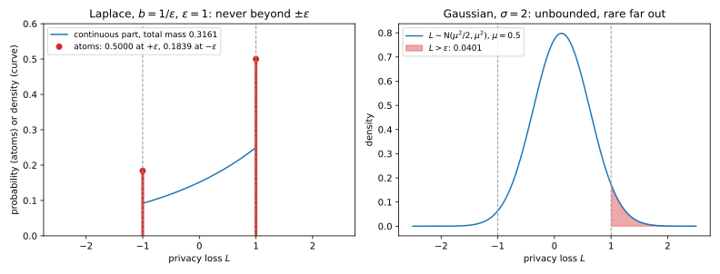

20 The Laplace and Gaussian mechanisms
You run a hospital database and want to publish how many patients have diabetes, with a differential privacy (DP) guarantee. The definition of differential privacy says what the release must satisfy: a change to one person’s record must barely change the distribution of what you publish. It does not say how to build such a release. The two mechanisms of this chapter are the answer used almost everywhere. Both compute the exact answer \(f(D)\) on the dataset \(D\) and blur it with fresh random noise \(Z\), so that you publish \[M(D) = f(D) + Z. \tag{20.1}\] If the noise is wide compared with how far one person can move the answer, an observer cannot tell from the output whether that person was there.
Three questions decide everything. The first is how much one record can move the answer, the sensitivity of \(f\), which sets the scale of the noise. The second is which noise distribution to use. Laplace noise gives pure \(\varepsilon\)-DP, while Gaussian noise gives only \((\varepsilon, \delta)\)-DP but scales better when you release many numbers at once. The third is how much noise exactly. For Laplace noise a one-line formula answers it. For Gaussian noise the textbook formula is loose, and the exact answer comes from one equation solved numerically.
The running example is the hospital’s count: 1,234 of its \(n = 10{,}000\) patients have diabetes, and the count must be released under add/remove neighbours.
20.1 Sensitivity
To hide one record, the noise has to cover the largest change one record can make to the answer. That change is the sensitivity, the first thing to compute for any release. It depends on the query, on the norm that measures the change, and on the neighbouring relation of the definition of differential privacy. Under add/remove a neighbour has one record more or less, so the dataset size changes. Under replace one record is swapped for another, so the size \(n\) is fixed and public.
A change of a vector answer is measured in one of two norms. The \(\ell_1\) norm \(\|v\|_1 = \sum_i|v_i|\) is the total change summed over coordinates, and Laplace noise is calibrated to it. The \(\ell_2\) norm \(\|v\|_2 = \sqrt{\sum_iv_i^2}\) is the straight-line length, and Gaussian noise is calibrated to it.
Definition 20.1 (Sensitivity) Let \(f\colon \mathcal X^n \to \mathbb R^d\) be a query with values in \(\mathbb R^d\). For \(p \in \{1, 2\}\), the \(\ell_p\) sensitivity of \(f\) is the largest distance between its answers on two neighbouring datasets, \[\Delta_pf = \max_{D \sim D'}\big\|f(D) - f(D')\big\|_p. \tag{20.2}\]
How far apart the two sensitivities are depends on how one record’s change spreads over the coordinates. The next result says exactly how far, and Section 20.5 turns it into the rule that chooses between the two mechanisms.
Proposition 20.1 (The two sensitivities) For every query \(f\) with values in \(\mathbb R^d\), \[\Delta_2f \le \Delta_1f \le \sqrt d\,\Delta_2f. \tag{20.3}\] The left bound is reached when one record moves a single coordinate, the right one when it moves all \(d\) coordinates equally.
Proof.
- Fix a vector \(v \in \mathbb R^d\). The square of the sum \(\sum_i|v_i|\) is every \(v_i^2\) plus cross terms that are never negative, so \(\|v\|_2^2 \le \|v\|_1^2\), that is \(\|v\|_2 \le \|v\|_1\).
- The Cauchy–Schwarz inequality applied to the sum \(\sum_i 1\cdot|v_i|\) gives \(\|v\|_1 \le \sqrt d\,\|v\|_2\).
- Both inequalities hold for the change \(v = f(D) - f(D')\) of every neighbouring pair, so they hold for the maximum over pairs. If only one coordinate of \(v\) is non-zero, both norms equal its absolute value; if all \(d\) coordinates equal \(c\), then \(\|v\|_1 = dc\) and \(\|v\|_2 = \sqrt d\,c\).
The sensitivities of the standard queries follow from what the single worst record can do. Table 20.1 collects them. Records take values in a domain \(\mathcal X\), and \(B\) bounds a numerical record.
| Query | Add/remove \(\Delta_1\) | Add/remove \(\Delta_2\) | Replace \(\Delta_1\) | Replace \(\Delta_2\) |
|---|---|---|---|---|
| Count \(\lvert D\rvert\) | 1 | 1 | 0 | 0 |
| Sum, records in \([0, B]\) | \(B\) | \(B\) | \(B\) | \(B\) |
| Mean, records in \([0, B]\), \(n\) public | — | — | \(B/n\) | \(B/n\) |
| Histogram with \(d\) bins | 1 | 1 | 2 | \(\sqrt2\) |
| \(d\) threshold counts \(\#\{x \ge j\}\), \(j = 1..d\) | \(d\) | \(\sqrt d\) | \(d\) | \(\sqrt d\) |
Proposition 20.2 (Sensitivities of the standard queries) The sensitivities in Table 20.1 hold, and each is reached by some neighbouring pair.
Proof.
- Count. An added or removed record changes \(|D|\) by exactly 1. A replaced record leaves it unchanged, so under replace the size is not private and a count of all records needs no noise.
- Sum. An added record \(x \in [0, B]\) changes the sum by \(x \le B\), and the replacement of \(x\) by \(x'\) changes it by \(|x - x'| \le B\). Both bounds are reached with \(x = B\) and \(x' = 0\).
- Mean with public \(n\). Under replace the mean is the sum divided by the fixed \(n\), so its sensitivity is the sum’s divided by \(n\), which is \(B/n\). Under add/remove the size is private, so the noise cannot depend on it, and the pair \(D = \{0\}\), \(D' = \{0, B\}\) moves the mean from 0 to \(B/2\). So release a noisy sum and a noisy count instead.
- Histogram. Under add/remove the record lands in one bin, so that bin changes by 1 and the others not at all. The change vector is \(\pm e_j\), where \(e_j\) has a 1 in bin \(j\) and 0 elsewhere, and both of its norms are 1. Under replace one bin loses 1 and another gains 1, so the change is \(e_{j'} - e_j\), with \(\ell_1\) norm \(1 + 1 = 2\) and \(\ell_2\) norm \(\sqrt{1^2 + 1^2} = \sqrt2\).
- Threshold counts. The count for threshold \(j\) is the number of records with \(x \ge j\), so a record \(x\) adds 1 to every count with \(j \le x\). A record with \(x \ge d\) moves all \(d\) counts by 1, so the change vector is \((1, \dots, 1)\), with \(\ell_1\) norm \(d\) and \(\ell_2\) norm \(\sqrt d\). Under replace, a change of \(x\) to \(x'\) moves only the counts with \(j\) between the two values, at most \(d\) of them, by 1 each, so the same bounds hold.
Sensitivity is a worst case over datasets. It depends only on what the domain allows, not on the data you hold, so you can compute it before you look at the data. For the same reason the sum of arbitrary real numbers has infinite sensitivity, since one record can be as large as it likes, and clipping forces a finite \(B\) (Beyond global sensitivity). The neighbouring relation changes the answer by up to a factor of 2, because a replacement is a removal and an addition. So a guarantee stated without its neighbouring relation is ambiguous by that factor in \(\varepsilon\).
Example 20.1 The hospital also releases the mean age of its \(n = 10{,}000\) patients, with ages clipped to \([0, 100]\), under replace neighbours. By row 3 of Table 20.1 the sensitivity is \(B/n = 100/10{,}000 = 0.01\) year, so one patient moves the mean by at most a hundredth of a year, however old. For the diabetes count under add/remove, row 1 gives a sensitivity of 1.
20.2 The Laplace mechanism
The Laplace mechanism is the first mechanism to try (Dwork, McSherry, Nissim & Smith 2006). It adds independent Laplace noise to each coordinate, with scale proportional to the \(\ell_1\) sensitivity. Section A.3 in the appendices derives it from scratch for a single count.
Everything rests on the privacy loss of the definition of differential privacy, the log of how much more likely an output \(y\) is when the data are \(D\) than when they are \(D'\), \[L_{D,D'}(y) = \ln\frac{p_{M(D)}(y)}{p_{M(D')}(y)}, \tag{20.4}\] where \(p_{M(D)}\) is the density of the published output on dataset \(D\). Write \(P\) and \(Q\) for the two output distributions \(M(D)\) and \(M(D')\). That chapter proved (Proposition 18.1) that a mechanism whose loss is at most \(\varepsilon\) at every output, for every ordered neighbouring pair, is \(\varepsilon\)-DP. The Laplace mechanism is proved private exactly this way.
For additive noise the loss has a simple shape. On neighbouring datasets the mechanism outputs \(f(D) + Z\) and \(f(D') + Z\), the same noise around two different centres, so the density of \(Q\) is the density of \(P\) slid over by the shift \(f(D') - f(D)\). The hockey-stick divergence \(E_\gamma(P\|Q)\) of Divergences, for a factor \(\gamma \ge 1\), is the largest value of \(\Pr_P[S] - \gamma\Pr_Q[S]\) over events \(S\). At \(\gamma = e^\varepsilon\) it is the smallest \(\delta\) that works for the pair. The first result says that under this measure the true answer drops out and only the shift matters. So the Laplace scale must cover the shift, and Section 20.4 uses the same lemma for the Gaussian mechanism’s exact \(\delta\).
Lemma 20.1 (Additive noise reduces to one shifted pair) Let \(M(D) = f(D) + Z\), where \(Z\) has a density on \(\mathbb R^d\), and let \(v = f(D') - f(D)\) be the shift between the two answers on a neighbouring pair. Then for every \(\gamma \ge 1\), \[E_\gamma\big(M(D)\|M(D')\big) = E_\gamma\big(Z\|Z + v\big). \tag{20.5}\]
Proof.
- The map \(y \mapsto y - f(D)\) sends \(M(D)\) to \(Z\) and \(M(D')\) to \(Z + v\), and it is a bijection: every output corresponds to exactly one relabelled output, and back.
- So an event \(S\) about \(M\)’s output is the same as the event \(S - f(D)\) about the relabelled output, with the same probability under each dataset. The hockey-stick divergence is a maximum of \(\Pr_P[S] - \gamma\Pr_Q[S]\) over events, and both sides range over the same values, so they are equal.
For the hospital’s count, the true value 1234 drops out and only the shift \(v = 1\) remains. So privacy is a property of the noise and of the shifts that neighbouring datasets can produce, which Section 20.1 bounded. The Laplace mechanism chooses its scale so that the largest shift, divided by the scale, is exactly \(\varepsilon\).
Theorem 20.1 (The Laplace mechanism) The Laplace distribution \(\mathrm{Lap}(b)\) with scale \(b > 0\) has density \(\frac1{2b}e^{-|z|/b}\), a two-sided exponential peaked at 0. Let \(f\colon \mathcal X^n \to \mathbb R^d\) have \(\ell_1\) sensitivity \(\Delta_1f\) and let \(\varepsilon > 0\). The Laplace mechanism \[M(D) = f(D) + (Z_1, \dots, Z_d), \qquad Z_i \overset{\text{i.i.d.}}{\sim}\mathrm{Lap}(b), \quad b = \frac{\Delta_1f}{\varepsilon}, \tag{20.6}\] is \(\varepsilon\)-DP (i.i.d. means independent and identically distributed). Its error per coordinate is about \(b\), and for every failure probability \(\beta \in (0, 1)\) the largest error over the \(d\) coordinates obeys \[\mathbb E[|Z_i|] = b, \qquad \operatorname{Var}(Z_i) = 2b^2, \qquad \Pr\Big[\max_i|Z_i| > b\ln\frac d\beta\Big] \le \beta. \tag{20.7}\] The scale is the smallest that works in general: for a count, \(\mathrm{Lap}(b)\) noise with \(b < 1/\varepsilon\) is not \(\varepsilon\)-DP.
Proof. The plan is to bound the privacy loss coordinate by coordinate with the Laplace shift bound of Part 1, then to read the error off the Laplace distribution, and finally to exhibit an event on which the privacy bound is reached.
- Bound the loss. Fix \(D \sim D'\) and write \(a = f(D)\) and \(a' = f(D')\). The noise coordinates are independent, so the density of \(M(D)\) is a product over coordinates, and the loss is the sum of the coordinates’ losses. By Theorem 1.5, a \(\mathrm{Lap}(b)\) density against its copy shifted by \(a'_i - a_i\) has a loss of at most \(|a_i - a'_i|/b\) at every point. So for every \(y\) \[L_{D,D'}(y) \le \frac{\|a - a'\|_1}{b} \le \frac{\Delta_1f}{b} = \varepsilon. \tag{20.8}\] The same bound for the swapped pair gives \(L_{D,D'}(y) \ge -\varepsilon\), so \(|L_{D,D'}(y)| \le \varepsilon\) at every output, and the mechanism is \(\varepsilon\)-DP by Proposition 18.1.
- Accuracy. The absolute value \(|Z_i|\) has density \(\frac1be^{-z/b}\) on \(z \ge 0\), an exponential distribution with mean \(b\) and second moment \(2b^2\). Since \(Z_i\) has mean 0, that gives \(\mathbb E[|Z_i|] = b\) and \(\operatorname{Var}(Z_i) = 2b^2\). The integral of the same density from \(t\) to infinity gives the tail \(\Pr[|Z_i| > t] = e^{-t/b}\).
- All coordinates at once. Give each coordinate a share \(\beta/d\) of the failure probability: \(e^{-t/b} = \beta/d\) gives \(t = b\ln(d/\beta)\). By the union bound, the probability that at least one of the \(d\) coordinates fails is at most the sum of their failure probabilities, \(d\cdot\beta/d = \beta\).
- Tightness. The loss is largest at outputs left of both answers, so take a count with \(f(D) = 0\) and \(f(D') = 1\) and the event \(S = \{y \le 0\}\). Under \(\mathrm{Lap}(b)\) noise, \(\Pr[M(D) \in S] = \Pr[Z \le 0] = \frac12\) by the symmetry of the noise about 0, and \(\Pr[M(D') \in S] = \Pr[Z \le -1] = \frac12e^{-1/b}\) from the tail of step 2. So the ratio of the two probabilities is exactly \(e^{1/b}\), and on \(S\) the bound of step 1 holds with equality at every point. If \(b < 1/\varepsilon\), the ratio exceeds \(e^\varepsilon\) and the definition fails on this event.
The noise does not depend on \(n\). A count gets noise of scale \(1/\varepsilon\) whether the database has a hundred records or a hundred million, because one record moves a count by 1 either way. So the relative error of a count of size \(n\) is about \(1/(n\varepsilon)\): large populations are cheap to protect and small subgroups are expensive. The worst case is not rare, either. The privacy loss equals \(\varepsilon\) on the event \(S\) of step 4, which has probability \(\frac12\) (Figure 20.1, left), so the guarantee is tight at a typical output, not just at some unlikely one.

Two more facts about the Laplace mechanism matter later. First, the privacy loss of an output drawn from \(M(D)\) is a random number in \([-\varepsilon, \varepsilon]\), and Part 4’s accountants track its distribution (Figure 20.2, left). For a count with shift 1 and \(b = 1/\varepsilon\), Theorem 1.5 gives the loss \(+\varepsilon\) at every \(y \le f(D)\), which has probability \(\frac12\), and \(-\varepsilon\) at every \(y \ge f(D')\), which has probability \(\Pr[Z \ge 1] = \frac12e^{-\varepsilon}\). Between the two answers the loss is a continuous ramp. Second, the mechanism satisfies a whole curve of weaker guarantees. For every \(\varepsilon' < \varepsilon\) it is \((\varepsilon', \delta)\)-DP with \(\delta = 1 - e^{-(\varepsilon - \varepsilon')/2}\), the hockey-stick divergence of the shifted Laplace pair from Proposition 3.6, drawn as the dashed curve of Figure 20.3.
As for the shape of the noise, the proof used only that the log-density changes by at most \(\varepsilon/\Delta_1f\) per unit of shift, and the Laplace log-density \(-|z|/b\) has exactly that slope everywhere. Other shapes are slightly better for large \(\varepsilon\) (Geng & Viswanath’s staircase mechanism), but the Laplace is within a small factor and is the standard choice.

Example 20.2 Release the diabetes count, 1,234 of \(n = 10{,}000\) patients, with \(\varepsilon = 0.1\) under add/remove. The sensitivity is 1, so the noise is \(\mathrm{Lap}(10)\) and the expected absolute error is \(b = 10\) (simulated over a million releases: 9.978). With \(d = 1\) and \(\beta = 0.05\) in the accuracy bound, the error is below \(b\ln20 = 29.96\) with probability 0.95 (simulated 95th percentile: 29.85), a relative error of \(29.96/1234 = 0.0243\).
To see the privacy loss itself, take a count with \(b = 1\), so \(\varepsilon = 1\), and true answers 0 and 1. Table 20.2 evaluates the two densities and the loss at a few outputs. Left of both true answers the ratio of the densities is stuck at \(e\), right of them at \(e^{-1}\), and in between the loss falls linearly from 1 to \(-1\). Past both centres, a move further out multiplies both densities by the same factor, so no output favours one dataset by more than a factor of \(e\). A million simulated draws reproduce the tight event’s probabilities to three decimals (Table 20.7).
| Output \(y\) | \(-2\) | \(0\) | \(0.5\) | \(1\) | \(3\) |
|---|---|---|---|---|---|
| \(p_{M(D)}(y) = \frac12e^{-\lvert y\rvert}\) | 0.0677 | 0.5 | 0.3033 | 0.1839 | 0.0249 |
| \(p_{M(D')}(y) = \frac12e^{-\lvert y - 1\rvert}\) | 0.0249 | 0.1839 | 0.3033 | 0.5 | 0.0677 |
| \(L(y) = \lvert y - 1\rvert - \lvert y\rvert\) | 1 | 1 | 0 | \(-1\) | \(-1\) |
The hospital’s histogram of diagnoses, with 20 bins, \(\varepsilon = 1\) and add/remove, has \(\Delta_1 = 1\), so each bin gets \(\mathrm{Lap}(1)\) noise. With \(d = 20\) and \(\beta = 0.05\), every bin is within \(\ln(20/0.05) = 5.99\) of its true count with probability 0.95. In 20,000 simulated releases the maximum error exceeded 5.99 in a fraction 0.0464 of them, just under \(\beta\). Independent coordinates rarely fail together, so the union bound is nearly exact.
20.3 The Gaussian mechanism: classic calibration
Gaussian noise is the other natural choice. It has lighter tails than Laplace noise, a sum of independent Gaussians is again Gaussian, and it is calibrated to the \(\ell_2\) sensitivity, which can be much smaller than the \(\ell_1\) sensitivity. The price is that its privacy loss is a straight line in the output, so it is unbounded (Figure 20.1, right) and Gaussian noise cannot give pure DP. Instead you accept a small probability \(\delta\) that the loss exceeds \(\varepsilon\). This section derives the calibration of Dwork & Roth’s textbook, which many papers and libraries use, and shows where it is loose. Section A.6 in the appendices derives it from scratch, with worked numbers.
The smallest \(\delta\) that works for one pair is its hockey-stick divergence at \(\gamma = e^\varepsilon\). The largest of these over all pairs, as a function of \(\varepsilon\), is the privacy profile \(\delta_M(\varepsilon)\) of \(M\). The first tool names the worst event, the set of outputs where the loss is too large.
Lemma 20.2 (The bad event and the exact δ) Fix a neighbouring pair, write \(P\) and \(Q\) for the distributions of \(M(D)\) and \(M(D')\), with densities \(p\) and \(q\), and let \(L\) be the privacy loss. Call \(B = \{y : L(y) > \varepsilon\}\) the bad event, the outputs that favour \(D\) over \(D'\) by more than a factor \(e^\varepsilon\). Then \[E_{e^\varepsilon}(P\|Q) = \Pr_P[B] - e^\varepsilon \Pr_Q[B] \le \Pr_P[B] = \Pr_{y \sim P}[L(y) > \varepsilon]. \tag{20.9}\] Equivalently, writing \((x)_+ = \max(x, 0)\) for the positive part, \[E_{e^\varepsilon}(P\|Q) = \mathbb E_Q[(e^L - e^\varepsilon)_+] = \mathbb E_P[(1 - e^{\varepsilon - L})_+]. \tag{20.10}\]
Proof. The equality is Lemma 3.4 with \(\gamma = e^\varepsilon\), whose best event \(\{p > e^\varepsilon q\}\) is \(\{L > \varepsilon\} = B\), and the inequality drops the term \(e^\varepsilon\Pr_Q[B]\), which is never negative. For the expectation forms, the hockey-stick is the integral of \((p - e^\varepsilon q)_+\), which is \(q\,(e^L - e^\varepsilon)_+\) with \(q\) factored out and \(p\,(1 - e^{\varepsilon - L})_+\) with \(p\) factored out, as in Proposition 3.5.
So the bad event’s probability is always a valid \(\delta\), though usually a loose one. The last form needs only the distribution of the loss under \(P\), the starting point of Numerical accounting. For Gaussian noise that distribution is itself normal.
Lemma 20.3 (The privacy loss of Gaussian noise) Let \(M(D) = f(D) + Z\) with \(Z \sim \mathcal N(0, \sigma^2I_d)\), that is \(d\) independent normal coordinates with mean 0 and standard deviation \(\sigma\), and let \(v = f(D') - f(D)\) be the shift of a neighbouring pair. Write \(\mu = \|v\|_2/\sigma\) for the shift measured in standard deviations of the noise. Under \(M(D)\) the privacy loss is normal, \[L \sim \mathcal N\Big(\frac{\mu^2}2, \mu^2\Big), \tag{20.11}\] and under \(M(D')\) it is \(\mathcal N(-\mu^2/2, \mu^2)\).
Proof.
- The loss is linear in the noise. Write the output as \(y = f(D) + z\). The coordinates are independent, so the loss is the sum of the coordinates’ losses. By Theorem 1.5, a \(\mathcal N(0, \sigma^2)\) density against its copy shifted by \(v_i\) has the loss \((v_i^2 - 2v_iz_i)/(2\sigma^2)\) at \(z_i\). The sum over \(i\) is \[L(y) = \frac{\|v\|^2 - 2\langle z, v\rangle}{2\sigma^2}. \tag{20.12}\]
- Its distribution under \(M(D)\). The inner product \(\langle z, v\rangle = \sum_iz_iv_i\) is a sum of independent normals, so it is normal with mean 0 and variance \(\sigma^2\|v\|^2\). So \(L\) is normal with mean \(\|v\|^2/(2\sigma^2) = \mu^2/2\) and variance \(4\sigma^2\|v\|^2/(4\sigma^4) = \mu^2\).
- Under \(M(D')\) the noise is centred one shift further along \(v\), which raises \(\langle z, v\rangle\) by \(\|v\|^2\) on average and so lowers the loss by \(\mu^2\). The variance is unchanged.
Unlike the Laplace loss, the Gaussian loss has no atoms and no largest value (Figure 20.2, right). The classic calibration bounds \(\delta\) by the probability that the loss exceeds \(\varepsilon\), and chooses \(\sigma\) to make that tail small.
Theorem 20.2 (Classic Gaussian calibration) Let \(f\) have \(\ell_2\) sensitivity \(\Delta_2f\), and let \(\varepsilon \in (0, 1)\) and \(\delta \in (0, 1)\). The Gaussian mechanism \(M(D) = f(D) + Z\) with \(Z \sim \mathcal N(0, \sigma^2I_d)\) and \[\sigma = \frac{\Delta_2f\sqrt{2\ln(1.25/\delta)}}{\varepsilon} \tag{20.13}\] is \((\varepsilon, \delta)\)-DP (Dwork & Roth 2014, Theorem A.1).
Proof. The plan is to bound \(\delta\) by the bad-event probability of Lemma 20.2, which by Lemma 20.3 is a normal tail, and to show with a standard tail bound that this tail is below \(\delta\) for the \(\sigma\) above. The route is Dwork & Roth’s, in a shorter one-sided form. Write \(c = \sqrt{2\ln(1.25/\delta)}\), so \(\sigma = c\,\Delta_2f/\varepsilon\).
- Bound \(\delta\) by the bad event. By Lemma 20.2, \(\delta \le \Pr_P[L > \varepsilon]\). By Lemma 20.3 the loss is normal with mean \(\mu^2/2\) and standard deviation \(\mu\), so \(L > \varepsilon\) exactly when a standard normal exceeds \((\varepsilon - \mu^2/2)/\mu = \frac\varepsilon\mu - \frac\mu2\). With \(\Phi\) the standard normal cumulative distribution function (CDF), and its symmetry \(\Phi(-t) = 1 - \Phi(t)\), \[\Pr_P[L > \varepsilon] = \Phi(-t), \qquad t = \frac\varepsilon\mu - \frac\mu2. \tag{20.14}\]
- Take the worst shift. A larger shift makes the bad event more likely, because \(t\) decreases as \(\mu\) grows. So the worst neighbouring pair has the largest shift, \(\|v\|_2 = \Delta_2f\), that is \(\mu = \Delta_2f/\sigma = \varepsilon/c\), and then \(t = c - \frac{\varepsilon}{2c}\).
- Bound the normal tail. The Mills-ratio bound of Concentration inequalities says \(\Phi(-t) \le \varphi(t)/t\) for \(t > 0\), where \(\varphi(t) = e^{-t^2/2}/\sqrt{2\pi}\) is the standard normal density.
- Expand \(t^2\). The square of \(t = c - \varepsilon/(2c)\) is \(t^2 = c^2 - \varepsilon + \frac{\varepsilon^2}{4c^2} \ge c^2 - \varepsilon\), because the last term is positive. By the definition of \(c\), \(e^{-c^2/2} = \delta/1.25\), so \[e^{-t^2/2} \le \frac{\delta}{1.25}\,e^{\varepsilon/2}. \tag{20.15}\]
- Combine. Steps 3 and 4 give \(\Pr_P[L > \varepsilon] \le \delta\,e^{\varepsilon/2}/(1.25\sqrt{2\pi}\,t)\), which is at most \(\delta\) when \(t \ge e^{\varepsilon/2}/(1.25\sqrt{2\pi})\). For \(\varepsilon \le 1\) the right side is at most \(e^{1/2}/(1.25\sqrt{2\pi}) = 0.5262\).
- Check that \(t\) is large enough. For \(\varepsilon \le 1\), \(t = c - \varepsilon/(2c) \ge c - 1/(2c)\), and this lower bound grows with \(c\). It equals 0.5262 at the positive root of \(c^2 - 0.5262c - \frac12 = 0\), which is where \(\delta = 1.25e^{-c^2/2} = 0.7448\); since \(c\) grows as \(\delta\) shrinks, \(t \ge 0.5262\) for every \(\delta \le 0.7448\), and every \(\delta\) of practical interest qualifies.
The constant 1.25 absorbs \(e^{\varepsilon/2} \le e^{1/2}\) and the \(1/(t\sqrt{2\pi})\) factor of step 5, and the condition \(\varepsilon < 1\) keeps \(e^{\varepsilon/2}\) under control. The proof made three approximations in a row: the bad-event bound, the Mills ratio and the constants. The example follows the chain to see what each one costs.
Example 20.3 Release the diabetes count with \(\varepsilon = 1\) and \(\delta = 10^{-5}\). The sensitivity is 1, so \(c = \sqrt{2\ln(1.25\times10^5)}\) gives \(\sigma = 4.8448\) and \(t = c - 1/(2c) = 4.7416\). Table 20.3 follows the proof step by step.
| Quantity | Value | What was dropped to get the next line |
|---|---|---|
| Exact \(\delta(\varepsilon)\), the hockey-stick | \(4.11\times10^{-8}\) | the term \(e^\varepsilon \Pr_Q[B]\) of Equation 20.9 |
| \(\Pr[L > \varepsilon] = \Phi(-t)\) | \(1.06\times10^{-6}\) | the Mills-ratio approximation |
| Mills bound \(\varphi(t)/t\) | \(1.10\times10^{-6}\) | the constants \(e^{\varepsilon/2}\), 1.25 and \(t\sqrt{2\pi}\) |
| Target \(\delta\) | \(10^{-5}\) |
The classic \(\sigma\) delivers a \(\delta\) about 240 times smaller than asked for, since \(10^{-5}/(4.11\times10^{-8}) \approx 243\). Most of the slack is in two places. The bad-event bound throws away the \(e^\varepsilon \Pr_Q[B]\) correction, a factor of \(1.06\times10^{-6}/(4.11\times10^{-8}) \approx 26\) here, and the constants of steps 4 and 5 lose another factor of \(10^{-5}/(1.10\times10^{-6}) \approx 9\). The Mills ratio itself costs almost nothing.
So you could use less noise for the same \((\varepsilon, \delta)\), and Section 20.4 finds exactly how much less. The classic theorem is stated for \(\varepsilon < 1\). Above 1 the formula does not fail at once: at \(\delta = 10^{-5}\) the classic \(\sigma\) gives a valid guarantee up to \(\varepsilon = 8.42\) and violates it beyond (Figure 20.4, right). The classic \(\sigma\) shrinks like \(1/\varepsilon\), while the exact one shrinks more slowly. Nothing in the classic proof tells you that, so for \(\varepsilon \ge 1\) you need the exact curve.
20.4 The exact privacy profile of the Gaussian mechanism
Lemma 20.2 says that the smallest valid \(\delta\) is the bad-event probability minus the correction \(e^\varepsilon \Pr_Q[B]\), and Lemma 20.3 says that for Gaussian noise both terms are normal tail probabilities. So the exact \(\delta\) has a closed form, the one Divergences computed for two Gaussians with the same variance. Balle & Wang (2018) turned it into a calibration: compute \(\delta\) exactly instead of a bound, and pick the smallest \(\sigma\) for which it is below the target. Section A.7 in the appendices derives the formula from scratch, with worked numbers.
Theorem 20.3 (Exact privacy profile of the Gaussian mechanism) Let \(f\) have \(\ell_2\) sensitivity \(\Delta_2f\), reached by some neighbouring pair, and let \(M(D) = f(D) + Z\) with \(Z \sim \mathcal N(0, \sigma^2I_d)\). Write \(\mu = \Delta_2f/\sigma\). Then \(M\) is \((\varepsilon, \delta)\)-DP if and only if \(\delta \ge \delta_\mu(\varepsilon)\), where \[\delta_\mu(\varepsilon) = \Phi\Big(\frac\mu2 - \frac\varepsilon\mu\Big) - e^\varepsilon\,\Phi\Big(-\frac\mu2 - \frac\varepsilon\mu\Big). \tag{20.16}\] The function \(\delta_\mu(\varepsilon)\) is strictly decreasing in \(\varepsilon\) and strictly increasing in \(\mu\). At \(\varepsilon = 0\) it is the total variation (TV) distance \(2\Phi(\mu/2) - 1\) between the two output distributions, and it tends to 0 as \(\varepsilon \to \infty\).
Proof. The plan is to reduce the worst pair to one dimension, apply the two lemmas there, and show that the largest shift is the worst one; the monotonicity claims then follow from the formula.
- Reduce to a shifted pair. By Lemma 20.1, for a neighbouring pair with shift \(v\) the smallest \(\delta\) at this \(\varepsilon\) is \(E_{e^\varepsilon}\big(\mathcal N(0, \sigma^2I_d)\|\mathcal N(v, \sigma^2I_d)\big)\).
- Reduce to one dimension. Rotate coordinates so that \(v\) points along the first axis. A rotation is a bijection, so as in Lemma 20.1 it changes no divergence, and the normal distribution with independent equal-variance coordinates looks the same after any rotation (Section E.1 in the appendices proves it). Now both distributions are products: the first coordinate is \(\mathcal N(0, \sigma^2)\) or \(\mathcal N(\|v\|_2, \sigma^2)\), and the other \(d - 1\) coordinates have the same density \(h\) under both. The hockey-stick is the integral of \((p - \gamma q)_+\), and \((p_1h - \gamma q_1h)_+ = h\,(p_1 - \gamma q_1)_+\) because \(h \ge 0\). So the integral over the last \(d - 1\) coordinates leaves \(E_\gamma\) of the first coordinate alone: coordinates that are identical under both hypotheses carry no evidence.
- Use the one-dimensional formula. Divide the output by \(\sigma\), a bijection, to get the unit-variance pair with shift \(\mu_v = \|v\|_2/\sigma\). For that pair Proposition 3.6 gives, with \(\gamma = e^\varepsilon\), \[E_{e^\varepsilon} = \Phi\Big(\frac{\mu_v}2 - \frac\varepsilon{\mu_v}\Big) - e^\varepsilon\,\Phi\Big(-\frac{\mu_v}2 - \frac\varepsilon{\mu_v}\Big), \tag{20.17}\] which is Equation 20.16 with \(\mu_v\) in place of \(\mu\).
- The worst pair has the largest shift. A smaller shift is harder to detect: the pair with a smaller shift is a post-processing of the pair with a larger one, which cannot help anyone tell them apart. Let \(\mu' < \mu_v\), take \(Y\) from the unit-variance pair with shift \(\mu_v\), and output \(Y' = \frac{\mu'}{\mu_v}Y + W\) with independent \(W \sim \mathcal N(0, 1 - \mu'^2/\mu_v^2)\). If \(Y \sim \mathcal N(0, 1)\) then \(Y'\) has mean 0 and variance \(\mu'^2/\mu_v^2 + (1 - \mu'^2/\mu_v^2) = 1\); if \(Y \sim \mathcal N(\mu_v, 1)\) the mean becomes \(\mu'\) and the variance is still 1. By the data-processing inequality of Divergences, the hockey-stick of the post-processed pair is no larger, so \(\delta_{\mu_v}(\varepsilon)\) is non-decreasing in \(\mu_v\) and the maximum over neighbours is at \(\|v\|_2 = \Delta_2f\), that is at \(\mu\).
- If and only if. The hockey-stick at \(\gamma = e^\varepsilon\) is the smallest \(\delta\) that works for one pair, and steps 1 to 4 show that the pair at shift \(\Delta_2f\) is the worst. So \(\delta \ge \delta_\mu(\varepsilon)\) is sufficient, since it covers the worst pair and hence all, and necessary, since any smaller \(\delta\) fails on that pair.
- Monotone in \(\varepsilon\) and in \(\mu\). The derivatives of Equation 20.16 are \(\frac{\mathrm d}{\mathrm d\varepsilon}\delta_\mu(\varepsilon) = -e^\varepsilon\Phi(-\frac\mu2 - \frac\varepsilon\mu) < 0\) and \(\frac{\mathrm d}{\mathrm d\mu}\delta_\mu(\varepsilon) = \varphi(\frac\mu2 - \frac\varepsilon\mu) > 0\).
- The two ends. At \(\varepsilon = 0\) the factor \(e^\varepsilon\) is 1 and Equation 20.16 reads \(\Phi(\frac\mu2) - \Phi(-\frac\mu2) = 2\Phi(\mu/2) - 1\), which is the TV distance because the TV distance is the hockey-stick with \(\gamma = 1\). As \(\varepsilon \to \infty\) the first term \(\Phi(\frac\mu2 - \frac\varepsilon\mu)\) goes to 0 and the second is non-negative, so \(\delta_\mu(\varepsilon) \to 0\).
Because \(\delta_\mu\) grows with \(\mu\), less noise always means a larger \(\delta\), so a single noise level hits the target exactly.
Corollary 20.1 (Analytic calibration) For \(0 < \delta < 1\) the equation \(\delta_\mu(\varepsilon) = \delta\) has exactly one root \(\mu^*\) in \(\mu\), and \[\sigma^*(\varepsilon, \delta) = \frac{\Delta_2f}{\mu^*} \tag{20.18}\] is the smallest \(\sigma\) for which the Gaussian mechanism is \((\varepsilon, \delta)\)-DP.
Proof.
- As a function of \(\mu\), \(\delta_\mu(\varepsilon)\) is continuous, tends to 0 as \(\mu \to 0\) (both arguments of \(\Phi\) go to \(-\infty\), since there is no signal) and to 1 as \(\mu \to \infty\) (the first \(\Phi\) goes to 1 and the second to 0), and is strictly increasing by Theorem 20.3. So it crosses every \(\delta \in (0, 1)\) exactly once.
- By Theorem 20.3, a noise level \(\sigma\) works exactly when \(\delta_{\Delta_2f/\sigma}(\varepsilon) \le \delta\), that is when \(\Delta_2f/\sigma \le \mu^*\), so the smallest such \(\sigma\) is \(\Delta_2f/\mu^*\).
Bisection finds the root. Start with an interval of \(\mu\) whose ends put \(\delta_\mu(\varepsilon)\) on either side of \(\delta\), evaluate at the midpoint, and keep the half where the sign changes. Monotonicity makes this safe, because there is exactly one crossing to find. The script halves in \(\ln\mu\), because \(\mu^*\) ranges over several orders of magnitude.
Example 20.4 Release the diabetes count at \(\varepsilon = 0.1\), \(\delta = 10^{-5}\) with Gaussian noise. The sensitivity is 1, so the analytic calibration gives \(\sigma^* = 30.75\), the row \(\varepsilon = 0.1\) of Table 20.5. A normal variable stays within 1.96 standard deviations of its mean with probability 0.95, so the 95% error is \(1.96\sigma^* = 60.27\), against 29.96 for Laplace noise with \(\delta = 0\). So for a single count, Laplace noise is better on both error and guarantee, and Section 20.5 says when the Gaussian earns its place.
To see the two terms of Equation 20.9 at work, take \(\mu = 1\) and \(\varepsilon = 1\) and measure the noise \(z\) in units of \(\sigma\). With \(\mu = 1\) the loss is \(L = \frac12 - z\), so the bad event \(B = \{L > 1\}\) is \(\{z < -\frac12\}\). Under \(M(D)\) the noise is standard normal, so \(\Pr_P[B] = \Phi(-0.5)\). Under \(M(D')\) the output is centred one unit higher, so in the same coordinates \(z\) is \(\mathcal N(1, 1)\) and \(\Pr_Q[B] = \Phi(-1.5)\). Table 20.4 evaluates both, and the integration and Monte Carlo checks of Table 20.7 agree.
| Term | Formula | Value |
|---|---|---|
| \(\Pr_P[B]\), the bad-event bound | \(\Phi(\frac\mu2 - \frac\varepsilon\mu) = \Phi(-0.5)\) | 0.3085 |
| \(e^\varepsilon \Pr_Q[B]\), the correction | \(e\,\Phi(-\frac\mu2 - \frac\varepsilon\mu) = e\,\Phi(-1.5)\) | 0.1816 |
| \(\delta_1(1)\), the exact \(\delta\) | difference | 0.1269 |
One Gaussian mechanism gives a whole curve of guarantees, not one: it is \((\varepsilon, \delta_\mu(\varepsilon))\)-DP for every \(\varepsilon \ge 0\) at once, with a smaller \(\delta\) at a larger \(\varepsilon\) (Figure 20.3). At \(\sigma = \Delta_2f\), so \(\mu = 1\), the curve passes through \(\delta = 0.3829\) at \(\varepsilon = 0\) (the TV distance), 0.1269 at \(\varepsilon = 1\), 0.0209 at \(\varepsilon = 2\) and \(4.71\times10^{-5}\) at \(\varepsilon = 4\), and reaches \(10^{-5}\) at \(\varepsilon = 4.3772\). The whole curve, not a single point, is what composes tightly in Part 4. Only the ratio \(\mu = \Delta_2f/\sigma\) enters Equation 20.16, so double the sensitivity with double the noise gives the same curve. Read \(\mu\) as a signal-to-noise ratio, the parameter of the Gaussian trade-off curve in Hypothesis testing.

Table 20.5 compares the two calibrations at \(\delta = 10^{-5}\). Over the rows with \(\varepsilon \le 1\) the classic formula uses between 1.30 and 1.68 times the necessary noise, and the gap grows as \(\varepsilon\) shrinks. Variance is \(\sigma^2\), so at \(\varepsilon = 1\) the classic noise has 69% more variance than needed, which you could spend on a smaller \(\varepsilon\) instead. The last column shows the other failure: beyond \(\varepsilon = 8.42\) the true \(\delta\) at the classic \(\sigma\) exceeds the target.
| \(\varepsilon\) | Classic \(\sigma/\Delta_2f\) | Analytic \(\sigma^*/\Delta_2f\) | Ratio | True \(\delta\) at the classic \(\sigma\) |
|---|---|---|---|---|
| 0.05 | 96.8961 | 57.7707 | 1.677 | \(1.29\times10^{-9}\) |
| 0.1 | 48.4481 | 30.7496 | 1.576 | \(2.64\times10^{-9}\) |
| 0.25 | 19.3792 | 13.2855 | 1.459 | \(7.10\times10^{-9}\) |
| 0.5 | 9.6896 | 7.0318 | 1.378 | \(1.61\times10^{-8}\) |
| 1 | 4.8448 | 3.7306 | 1.299 | \(4.11\times10^{-8}\) |
| 2 | 2.4224 | 1.9938 | 1.215 | \(1.34\times10^{-7}\) |
| 4 | 1.2112 | 1.0812 | 1.120 | \(6.84\times10^{-7}\) |
| 8 | 0.6056 | 0.6002 | 1.009 | \(7.97\times10^{-6}\) |

20.5 Laplace against Gaussian in many dimensions
Real releases are vectors: a histogram over many bins, all the marginals of a table, a gradient with millions of coordinates. The Laplace mechanism scales with \(\Delta_1f\) and the Gaussian mechanism with \(\Delta_2f\), and by Proposition 20.1 these can differ by a factor of up to \(\sqrt d\). Which noise is better depends on how one record spreads across the coordinates. The comparison is at the same \(\varepsilon\), by the root-mean-square error per coordinate.
Proposition 20.3 (Laplace against Gaussian per coordinate) Let \(\sigma_1(\varepsilon, \delta)\) be the analytic \(\sigma^*\) of Corollary 20.1 for unit \(\ell_2\) sensitivity, so that \(\sigma^* = \Delta_2f\,\sigma_1(\varepsilon, \delta)\) for any \(f\). At the same \(\varepsilon\), the root-mean-square errors per coordinate of the two mechanisms are \[\text{Laplace: } \frac{\sqrt2\,\Delta_1f}{\varepsilon}, \qquad \text{Gaussian: } \Delta_2f\,\sigma_1(\varepsilon, \delta). \tag{20.19}\] For a sparse query, where one record moves one coordinate, \(\Delta_1f = \Delta_2f\), and Laplace noise is more accurate whenever \(\sqrt2 < \varepsilon\,\sigma_1(\varepsilon, \delta)\), whatever \(d\) is. For a dense query, where one record moves every coordinate by 1, \(\Delta_1f = d\) and \(\Delta_2f = \sqrt d\), and Laplace noise is more accurate only while \[d < \frac{\big(\varepsilon\,\sigma_1(\varepsilon, \delta)\big)^2}2. \tag{20.20}\]
Proof.
- Laplace error. A \(\mathrm{Lap}(b)\) coordinate has mean 0 and variance \(2b^2\) by Theorem 20.1, so its root-mean-square error is \(\sqrt2\,b\), which with \(b = \Delta_1f/\varepsilon\) is \(\sqrt2\,\Delta_1f/\varepsilon\).
- Gaussian error. A Gaussian coordinate has variance \(\sigma^2\), so its root-mean-square error is \(\sigma\). The analytic calibration gives \(\sigma^* = \Delta_2f\,\sigma_1(\varepsilon, \delta)\), because only \(\mu = \Delta_2f/\sigma\) enters Equation 20.16, so scaling the sensitivity scales the solution by the same factor.
- Sparse queries. With \(\Delta_1f = \Delta_2f\), Laplace is better when \(\sqrt2\,\Delta_2f/\varepsilon < \Delta_2f\,\sigma_1\). Divide by \(\Delta_2f\) and multiply by \(\varepsilon\) to get \(\sqrt2 < \varepsilon\sigma_1\), with no \(d\).
- Dense queries. With \(\Delta_1f = d\) and \(\Delta_2f = \sqrt d\), Laplace is better when \(\sqrt2\,d/\varepsilon < \sqrt d\,\sigma_1\). Divide both sides by \(\sqrt d\) to get \(\sqrt d < \varepsilon\sigma_1/\sqrt2\), and square both sides for the bound on \(d\).
So use Laplace noise for sparse queries and Gaussian noise for dense ones. When a record touches one coordinate, the two sensitivities agree, and Laplace gives the stronger guarantee, with \(\delta = 0\), and less noise too. When a record touches all coordinates, \(\Delta_1f\) pays \(d\) while \(\Delta_2f\) pays \(\sqrt d\), and the Gaussian wins by a factor that grows like \(\sqrt d\) (Figure 20.5). This is why private training of neural networks uses Gaussian noise. One example’s gradient moves every coordinate of a model with millions of parameters, the densest query there is, and clipping bounds its \(\ell_2\) norm, which is what the Gaussian mechanism is calibrated to.
The comparison is at equal \(\varepsilon\) but unequal guarantees, since the Gaussian release has an extra \(\delta\). The Gaussian mechanism also has an advantage that the comparison does not show. Independent Gaussian answers, stacked, are one Gaussian answer whose \(\ell_2\) sensitivity is the root-sum-of-squares of theirs, so many Gaussian releases compose exactly into another Gaussian mechanism.

Example 20.5 The hospital releases the empirical CDF of its patients’ ages, read off at \(d\) thresholds, at \(\varepsilon = 1\) and \(\delta = 10^{-5}\). There \(\sigma_1 = 3.7306\), the value found by bisection in Section 20.4. For one count, Laplace noise has root-mean-square error \(\sqrt2 = 1.4142\) against 3.7306 for Gaussian noise, so Laplace wins. For threshold counts the crossover is at \(d = (3.7306)^2/2 = 6.96\). Table 20.6 shows the errors, exactly (from \(\sqrt2\,d\) and \(3.7306\sqrt d\)) and by simulation. At 100 thresholds Gaussian noise is 3.79 times more accurate, and at 1,000 thresholds 11.99 times.
| \(d\) | Laplace, exact | Laplace, simulated | Gaussian, exact | Gaussian, simulated | Laplace / Gaussian |
|---|---|---|---|---|---|
| 1 | 1.41 | 1.42 | 3.73 | 3.73 | 0.38 |
| 10 | 14.14 | 14.09 | 11.80 | 11.78 | 1.20 |
| 100 | 141.42 | 141.07 | 37.31 | 37.28 | 3.79 |
| 1000 | 1414.21 | 1412.90 | 117.97 | 118.11 | 11.99 |
20.6 Code
The script code/laplace_gaussian.py computes every number in this chapter and draws every figure. Sensitivities are found by brute force over every dataset of one to three records with values in \(\{0, 1, 2, 3\}\). The Laplace mechanism’s privacy and accuracy are checked by simulation. For the Gaussian mechanism, the closed form Equation 20.16 is checked against Simpson’s rule on the two densities and against a Monte Carlo average of the privacy loss, and the analytic calibration is solved by bisection on \([e^{-12}, e^8]\). From the repository root:
uv run python code/part03-dp-foundations/laplace_gaussian.py| Experiment | Result |
|---|---|
| Sensitivities, brute force over datasets of up to 3 records | Every row of Table 20.1, e.g. threshold counts \(\ell_1 = 3\), \(\ell_2 = 1.7321\) |
| Laplace privacy loss, count, \(\varepsilon = 1\) | Ranges over exactly \([-1, 1]\) |
| Laplace tight event | \(\Pr[M(D) \le 0] = 0.5002\), \(\Pr[M(D') \le 0] = 0.1838\), ratio 2.7221 against \(e = 2.7183\) |
| Laplace privacy loss distribution, \(\varepsilon = 1\) | Atoms 0.5000 and 0.1839 (simulated 0.5007, 0.1841), ramp 0.3161; mean 0.3679 (simulated 0.3682) |
| Laplace count, \(\varepsilon = 0.1\) | Mean absolute error 9.978 (exact 10); 95th percentile 29.85 (bound 29.96) |
| Laplace histogram, 20 bins | Maximum error above 5.99 in a fraction 0.0464 of releases (\(\beta = 0.05\)) |
| Classic proof chain, \(\varepsilon = 1\), \(\delta = 10^{-5}\) | Exact \(\delta\) \(4.11\times10^{-8}\); \(\Pr[L > \varepsilon]\) \(1.06\times10^{-6}\); Mills bound \(1.10\times10^{-6}\) |
| Gaussian closed form vs integration | Largest relative difference \(3.1\times10^{-6}\) over 24 pairs \((\varepsilon, \mu)\) with \(\delta > 10^{-12}\) |
| Gaussian, \(\mu = 1\), \(\varepsilon = 1\) | \(\delta = 0.1269\) (integrated 0.1269, Monte Carlo 0.1270) |
| Analytic calibration, \(\varepsilon = 1\), \(\delta = 10^{-5}\) | \(\sigma^* = 3.7306\), classic 4.8448 |
| Classic \(\sigma\) fails at \(\delta = 10^{-5}\) | For \(\varepsilon > 8.42\) |
| Laplace vs Gaussian, threshold counts | Crossover at \(d = 6.96\); Table 20.6 |
tests/test_laplace_gaussian.py checks that the output still matches.
20.7 Summary
| Result | Statement | Use |
|---|---|---|
| Definition 20.1 | \(\Delta_pf = \max_{D \sim D'}\Vert f(D) - f(D')\Vert_p\) | Compute it first, from the domain, and say which neighbouring relation it is for |
| Proposition 20.1 | \(\Delta_2f \le \Delta_1f \le \sqrt d\,\Delta_2f\) | Sparse queries sit at the left end, dense ones at the right |
| Proposition 20.2 | Count 1; sum in \([0, B]\): \(B\); mean with public \(n\): \(B/n\); histogram 1, or 2 and \(\sqrt2\) under replace | Calibrating every release |
| Lemma 20.1 | \(E_\gamma(M(D)\Vert M(D')) = E_\gamma(Z\Vert Z + v)\) | Only the shift matters, so analyse the noise against a shifted copy of itself |
| Theorem 20.1 | \(f(D) + \mathrm{Lap}(\Delta_1f/\varepsilon)^d\) is \(\varepsilon\)-DP, tightly; error \(b\) per coordinate, \(b\ln(d/\beta)\) for all at once | Counts, histograms, low-dimensional statistics; report-noisy-max |
| Lemma 20.2 | \(\delta_{\text{exact}} = \Pr_P[L > \varepsilon] - e^\varepsilon\Pr_Q[L > \varepsilon] \le \Pr_P[L > \varepsilon]\) | The exact \(\delta\) of any mechanism from its privacy loss; Numerical accounting |
| Lemma 20.3 | \(L \sim \mathcal N(\mu^2/2, \mu^2)\) under \(M(D)\), with \(\mu = \Vert v\Vert_2/\sigma\) | Unbounded, so no pure DP; the object Part 4’s accountants compose |
| Theorem 20.2 | \(\sigma = \Delta_2f\sqrt{2\ln(1.25/\delta)}/\varepsilon\) for \(\varepsilon < 1\) | Reading papers and libraries that still use it; 1.3 to 1.7 times too much noise, and wrong for large \(\varepsilon\) |
| Theorem 20.3 | \((\varepsilon, \delta)\)-DP iff \(\delta \ge \Phi(\frac\mu2 - \frac\varepsilon\mu) - e^\varepsilon\Phi(-\frac\mu2 - \frac\varepsilon\mu)\) | Every Gaussian release; quote the profile, or \(\mu\), not one \((\varepsilon, \delta)\) pair |
| Corollary 20.1 | \(\sigma^* = \Delta_2f/\mu^*\) with \(\delta_{\mu^*}(\varepsilon) = \delta\), one bisection | At \(\varepsilon = 1\), \(\delta = 10^{-5}\): \(\sigma^* \approx 3.73\,\Delta_2f\) |
| Proposition 20.3 | Per coordinate: \(\sqrt2\,\Delta_1f/\varepsilon\) against \(\Delta_2f\,\sigma_1(\varepsilon, \delta)\) | One number or a sparse vector: Laplace, pure DP. A dense vector: Gaussian, calibrated to \(\Delta_2\); gradients in Part 5 |
20.8 References
- Dwork, McSherry, Nissim & Smith, “Calibrating Noise to Sensitivity in Private Data Analysis” (TCC 2006): the paper that introduced global sensitivity and the Laplace mechanism.
- Dwork, Kenthapadi, McSherry, Mironov & Naor, “Our Data, Ourselves: Privacy via Distributed Noise Generation” (EUROCRYPT 2006): approximate \((\varepsilon, \delta)\)-DP and Gaussian noise.
- Dwork & Roth, The Algorithmic Foundations of Differential Privacy (2014), §3.3 for the Laplace mechanism and its accuracy, and Appendix A for the classic Gaussian calibration (Theorem A.1) with its two-sided proof.
- Balle & Wang, “Improving the Gaussian Mechanism for Differential Privacy: Analytical Calibration and Optimal Denoising” (ICML 2018): the exact privacy profile Equation 20.16, the bisection calibration, and why the classic formula fails for large \(\varepsilon\).
- Near & Abuah, Programming Differential Privacy, the chapters on sensitivity and on the Laplace and Gaussian mechanisms: the same material with code.
- Geng & Viswanath, “The Optimal Noise-Adding Mechanism in Differential Privacy” (IEEE Transactions on Information Theory, 2016): the staircase mechanism, optimal for pure DP, and how close the Laplace mechanism comes to it.
- Dong, Roth & Su, “Gaussian Differential Privacy” (JRSS-B 2022): the Gaussian mechanism as a trade-off curve, which is where Gaussian differential privacy takes \(\mu = \Delta_2f/\sigma\) next.